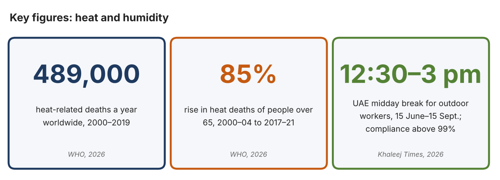
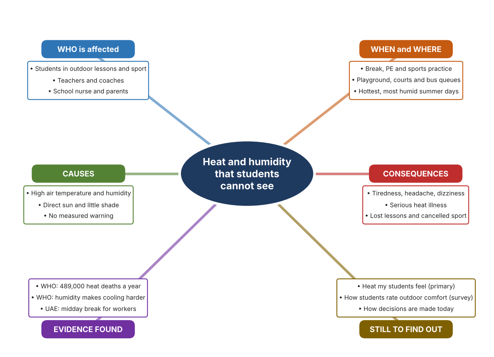
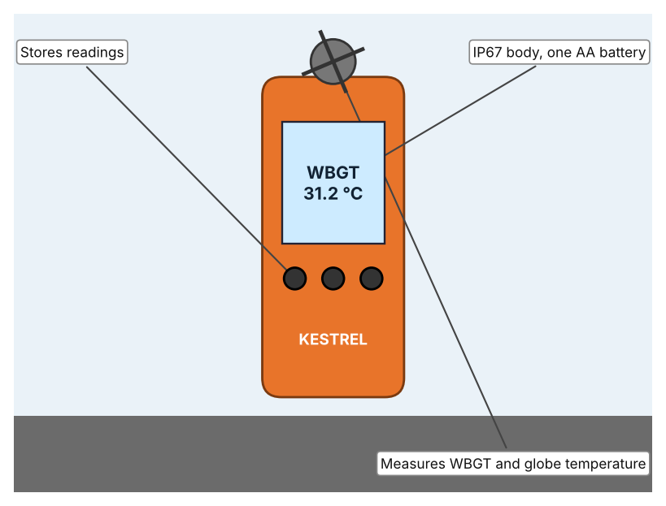
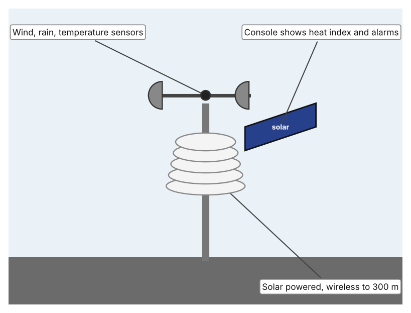
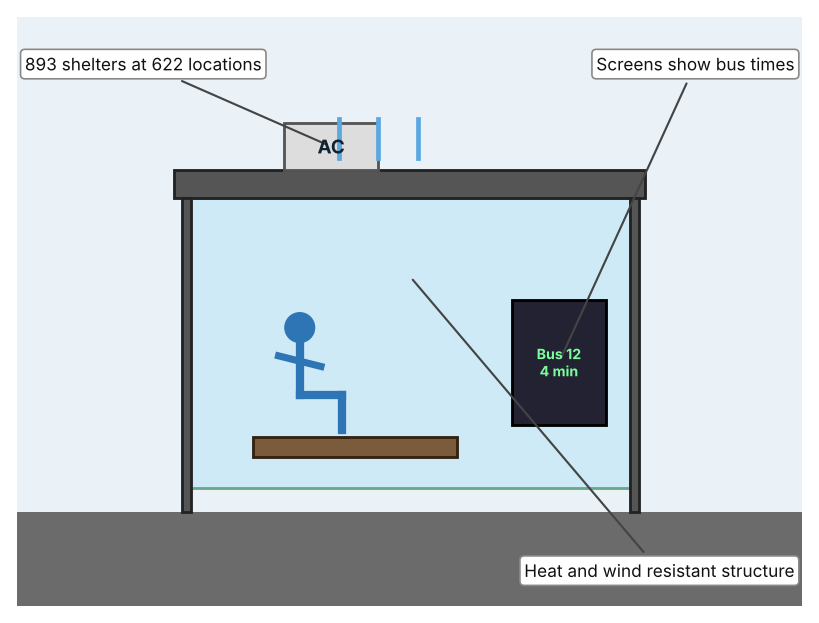

A1 · Design need
Identify and explain the problem faced by your client and community.
My client is the Physical Education Department of a Dubai school, represented by the Head of PE. The department runs outdoor lessons, breaks and sports practices, and its teachers have noticed that students become tired, dizzy or get headaches on hot, humid days. The teachers have no simple, measured way to decide when it is too hot to be outside, and the department needs the risk of heat stress for students to be reduced.
The people most affected are students who take part in outdoor lessons and sport, because they are active and often do not drink or rest until reminded. Teachers and coaches are a second group, because they must decide whether an activity continues. The school nurse and parents are a third group, because they deal with the results when someone becomes unwell.
The need is real because heat is a serious health risk. The World Health Organization estimates that about 489,000 heat-related deaths occurred each year between 2000 and 2019, and explains that high humidity together with high temperature makes it harder for the body to lose heat (World Health Organization, “Heat and Health”). In the UAE, outdoor workers are protected by a midday break from 12:30 to 3 pm between 15 June and 15 September, and Khaleej Times reports compliance above 99% in recent years (Salim). The rule shows that midday heat is treated as a danger, but it applies to workers, and I did not find a published equivalent for students, so my own evidence must show whether a gap exists in my school.
Figure 1 summarises the key numbers. The WHO figures are global and the UAE source describes workers, so I treat both as a pattern and not as proof about students. In my own words: heat becomes dangerous quietly, because a person who feels only a little unwell may already be in trouble. Figure 2 is my mind map of the problem.
320 words


A2 · Research plan
Six research questions of different types, each with a priority, a research type and evidence.
| # | Question | Priority | Primary / secondary | Evidence | Brief answer |
|---|---|---|---|---|---|
| 1 | Factual: How many people die from heat each year, and who is most at risk? | High | Secondary | WHO fact sheet, 2026 (Appendix A, Source 1) | About 489,000 heat-related deaths a year (2000–2019); people over 65, outdoor workers and athletes are among those most at risk. |
| 2 | Factual: What rules protect people from midday heat in the UAE? | High | Secondary | Khaleej Times, 8 June 2026 (Appendix A, Source 2) | The midday break bans work under direct sun from 12:30 to 3 pm between 15 June and 15 September, and compliance is reported above 99%. |
| 3 | Conceptual: Why does humidity matter as well as temperature, and what is measured to judge heat stress? | High | Secondary | WHO, 2026 (Source 1); Kestrel page (Source 3) | WHO says humidity with temperature makes it harder to lose heat. Heat-stress meters combine measurements such as wet-bulb globe temperature, humidity, wind and globe temperature. |
| 4 | Debatable: Should a school manage heat with fixed times, with measurements taken on site, or with shade and cooled places? | Medium | Secondary | Appendix A, Sources 2, 3, 4 and 5 | Fixed times are simple but ignore real conditions; measurements show conditions but need someone to act; shade and cooling reduce exposure but cost money. My view: measure first, then act. |
| 5 | Debatable (challenges my assumption, UAE source): Everyone in the UAE is used to heat, so is heat really a problem worth investigating at school? | High | Secondary | Khaleej Times, 8 June 2026 (Source 2); WHO, 2026 (Source 1) | The UAE has a legal midday break with compliance above 99%, which shows heat is treated as a danger. It covers workers, not students, so my own measurements must show the problem exists in my school. |
| 6 | Factual (primary): What temperature and humidity do students actually experience outdoors at our school, and how do they feel? | High | Primary | Own observation log and student survey (Appendix A, Sources 6 and 7) | [Student data needed: write the readings (with the time of day) and survey averages, then two sentences on the pattern you see.] |
A3 · Existing products
Three significantly different products, each analysed with ACCESS FM, with pros and cons.
Product 1: Handheld heat-stress meter (Kestrel 5400)

Illustration by the author based on “Kestrel 5400 Heat Stress Tracker,” Kestrel Meters (Appendix A, Source 3). [Student: replace with a photo from the source, cited MLA 9]
Product 2: Weather station (Davis Vantage Vue)

Illustration by the author based on “Vantage Vue,” Davis Instruments (Appendix A, Source 4). [Student: replace with a photo from the source, cited MLA 9]
Product 3: Air-conditioned bus shelter (Dubai RTA)

Illustration by the author based on Tesorero, Khaleej Times (Appendix A, Source 5). [Student: replace with a photo from the source, cited MLA 9]
ACCESS FM analysis
| ACCESS FM | Product 1 | Product 2 | Product 3 |
|---|---|---|---|
| Aesthetics | An orange version is listed; styling is not otherwise described (Kestrel). | Pole-mounted sensor suite with a touchscreen console; looks are not described (Davis). | Shelter with digital screens; the look of the cooling is not described (Khaleej Times). |
| Cost | US$479 (orange), US$529 with vane mount, US$599 pro version with compass and LiNK (Kestrel). | US$425 for the sensor suite; US$725 with the WeatherLink console (Davis). | Cost not stated in the article. |
| Customer | People who must check heat stress on the spot, such as supervisors or coaches (my inference). | Schools, homes or farms that want a continuous weather record (my inference). | Bus passengers; wheelchair spaces are provided. |
| Environment | IP67 body (3 ft); one AA lithium battery gives about 400 hours (Kestrel). | Solar powered with a supercapacitor and lithium backup (Davis). | Cleaning patrols; energy use and cooling method are not stated. |
| Size | Handheld; size is not stated on the page. | Sensors link wirelessly to the console up to 1,000 ft (300 m) in line of sight; size is not stated. | 893 shelters at 622 locations; size is not stated. |
| Safety | Warns the user when heat stress is high, but accuracy figures are not stated on the page. | 100+ alarms can be set on the console. | Gives a cooled place to wait; the temperature reached is not stated. |
| Function | Measures WBGT, globe, wet-bulb, air temperature, humidity, dew point, wind and pressure. | Measures temperature, humidity, dew point, wind, rain, heat index and pressure and shows 80+ graphs. | Cools waiting passengers and shows real-time bus information. |
| Materials | Materials are not stated on the page (Kestrel). | Materials are not stated on the page (Davis). | Heat- and wind-resistant structure; materials are not named. |
Pros and cons
| Product 1 | Product 2 | Product 3 | |
|---|---|---|---|
| Pro | Measures the combined heat load directly, is portable and is waterproof. | Records many weather values over time and shows them on a console. | Protects many people at once and is already built across Dubai. |
| Con | Costs US$479 or more and has to be carried and read by a person. | Fixed in one place and costs US$425 to US$725, so it cannot follow a class to another area. | Does not measure heat at all and cannot help students on a playing field. |
A4 · Design brief
Restate the need, summarise the research and the existing products, and state the design intent.
My client, the Physical Education Department of a Dubai school, needs the risk of heat stress for students to be reduced, and needs decisions about outdoor activity to be based on measurements. The problem is serious: the WHO estimates about 489,000 heat-related deaths a year, and warns that humidity together with temperature makes it harder for the body to lose heat (Appendix A, Source 1). In the UAE, outdoor workers have a midday break from 12:30 to 3 pm between 15 June and 15 September, with compliance reported above 99% (Appendix A, Source 2).
My research shows that heat is a risk that cannot be judged by feel alone, because several factors act together (Appendix A, Sources 1 and 3). The existing UAE rule works for workers, but I found no published student equivalent, so I need my own evidence. My debatable questions led me to decide that fixed times, measurement and cooled places each cover only part of the problem, and my challenged assumption (that people here are simply used to heat) showed me that a rule for one group does not protect another. I will therefore collect my own evidence with the observation log and the survey, always with permission (Appendix A, Sources 6 and 7).
I analysed three very different existing solutions. A handheld heat-stress meter measures several heat factors in one reading and is waterproof, but it costs US$479 or more and needs a person to carry and read it (Appendix A, Source 3). A weather station records conditions all day and sets alarms, but it stays in one place and costs up to US$725 (Appendix A, Source 4). An air-conditioned bus shelter cools many people, but it does not measure anything and cannot be used on a playing field (Appendix A, Source 5). They give me three ideas for inspiration: measuring at the person, measuring over time, and giving shelter. Each has a weakness that another covers.
My design intent is therefore to create a solution that measures the heat and humidity students are exposed to outdoors and warns teachers early enough to act. It must be affordable for a school, simple for a teacher to read in seconds, strong enough for daily outdoor use, and safe to handle. I have deliberately not fixed what form it will take. That decision will be made in Criterion B, after I analyse my own log and survey against the evidence in Appendix A.
406 words
Appendix A · Research notes and sources
Secondary sources in MLA 9, with notes and where each source is used.
| # | Source (MLA 9) | Key notes | Used in |
|---|---|---|---|
| 1 | World Health Organization. “Heat and Health.” WHO, 31 July 2026, www.who.int/news-room/fact-sheets/detail/climate-change-heat-and-health. Accessed 21 Oct. 2026. | About 489,000 heat-related deaths a year (2000–2019); heat deaths of over-65s up about 85% between 2000–04 and 2017–21; humidity with temperature impairs heat loss; outdoor workers, athletes and older people vulnerable. | A1; A2 Q1, Q3 and Q5; A4. |
| 2 | Salim, Sahim. “UAE Midday Break Starts June 15; Work under Direct Sunlight Banned during Peak Afternoon Hours.” Khaleej Times, 8 June 2026, www.khaleejtimes.com/uae/uae-midday-break-starts-june-15-work-under-direct-sunlight-banned-during-peak-afternoon-hours. Accessed 21 Oct. 2026. | Break 12:30–3 pm daily, 15 June–15 Sept.; monitored by the Ministry of Human Resources and Emiratisation; compliance above 99% in recent years; gives no heat readings. | A1; A2 Q2, Q4 and Q5; A4. |
| 3 | “Kestrel 5400 Heat Stress Tracker.” Kestrel Meters, kestrelmeters.com/products/kestrel-5400-heat-stress-tracker. Accessed 21 Oct. 2026. | US$479 to US$599; WBGT, globe, wet-bulb, air temperature, humidity, dew point, wind, pressure; IP67; one AA lithium about 400 h; accuracy not stated. | A2 Q3 and Q4; A3 Product 1; A4. |
| 4 | “Vantage Vue.” Davis Instruments, davisinstruments.com/vantage-vue/. Accessed 21 Oct. 2026. | Sensor suite US$425, with console US$725; solar powered; wireless to 1,000 ft; console with 80+ graphs and 100+ alarms. | A2 Q4; A3 Product 2; A4. |
| 5 | Tesorero, Angel. “Dubai: Taking the Bus? Nearly 900 Shelters Now Air-Conditioned to Help Residents Beat Heat.” Khaleej Times, 30 May 2025, www.khaleejtimes.com/uae/dubai-rta-893-air-conditioned-bus-shelters. Accessed 21 Oct. 2026. | 893 air-conditioned shelters at 622 locations; wheelchair spaces; digital screens; cleaning patrols; cooling method and temperatures not stated. | A2 Q4; A3 Product 3; A4. |
| 6 | Primary: outdoor heat log, completed by the student on [date]. Accessed own data. | [Student: summarise your counts.] | A2 primary question; A4. |
| 7 | Primary: survey of [number] people, completed on [date]. | [Student: summarise your averages.] | A2 primary question; A4. |
Primary research instrument 1: outdoor heat log
Student records readings outdoors at set times, with permission and with a teacher present.
| Location | Time | Temperature (°C) | Humidity (%) | In shade (Y/N) | Notes |
|---|---|---|---|---|---|
| Playground | |||||
| Sports court | |||||
| Bus queue | |||||
| Shaded area |
Primary research instrument 2: survey
Rate each statement from 1 (strongly disagree) to 5 (strongly agree). Collect responses with permission and record no names.
| Statement | 1 | 2 | 3 | 4 | 5 | Total responses |
|---|---|---|---|---|---|---|
| It feels too hot to exercise outside at break time. | ||||||
| I feel tired or dizzy outdoors on hot days. | ||||||
| Teachers know how hot it really is outside. | ||||||
| I would stop an activity if I was told the heat was dangerous. |